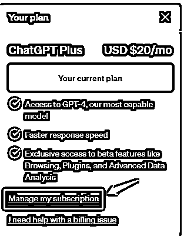

来源：https://h8sakm73dz.feishu.cn/docx/ZTaCdQ8KHoY4rQxzF40cmUYJnnb
由于众所周知的原因，我们在中国大陆升级ChatGPT Plus并不容易，经常卡在没有境外卡的这一步。
这篇文章能够让我们在中国大陆也可以顺利升级ChatGPT Plus，成为使用最强的GPT4的这一批少数人。
这是一篇手把手教你升级ChatGPT的教程。
升级ChatGPT Plus有什么好处？
我想不到任何理由不用这个最强的AI。
我们开始。
点击这里注册wildcard
点击Started，进入界面：
填入你的实名电话卡，接收验证码，点击Continue。
选择不同的套餐，这是一次性的费用。
两个套餐的区别在于年限、虚拟环境使用时间、海外电话卡的使用次数，支持额外的平台等。
（关于虚拟环境使用次数对于我们开ChatGPT账号和升级ChatGPT Plus很重要，后面会讲到）
选完套餐之后，就会进入这个身份验证的界面了。
WildCard是需要进行实名认证的，这也是合规化的要求。
实名认证完之后，我们就可以看到主界面了：
分配的这个卡号和Billing Adress，我们就可以把这些信息用于ChatGPT Plus升级使用了。
我们需要先充值到卡号（目前可以用银联和Stripe充值，之前可以用支付宝，这段时间用不了），最低要充$20 —— ChatGPT一个月的费用也就是20$
（不过我个人不建议留很多钱在里面，毕竟我们只是为了ChatGPT升级，分散一些风险是必要的，当然土豪随意）


接下来我们在ChatGPT界面里，点击左下角的用户，点这个My Plan：

点击这个Manage my subscription：
（如果你的还没升级，会和我的界面有些不一样，显示的是Free Plan）

在ChatGPT的会员管理里面，对应的上面我们开好的Wildcard账号，复制粘贴对应的信息，就可以了

我们在升级过程中，有可能因为环境的问题，导致升级失败。
在主页面找到这个地方：
如果我们选择第一种14$的方案，有三次的机会：

在这个虚拟环境下我们可以登陆进去，然后进行ChatGPT的升级。
大部分升级不了的原因，都是因为环境的问题所导致。
终于看到这个久违的升级成功画面了！
你还等什么呢？赶紧开始吧：点击这里注册wildcard